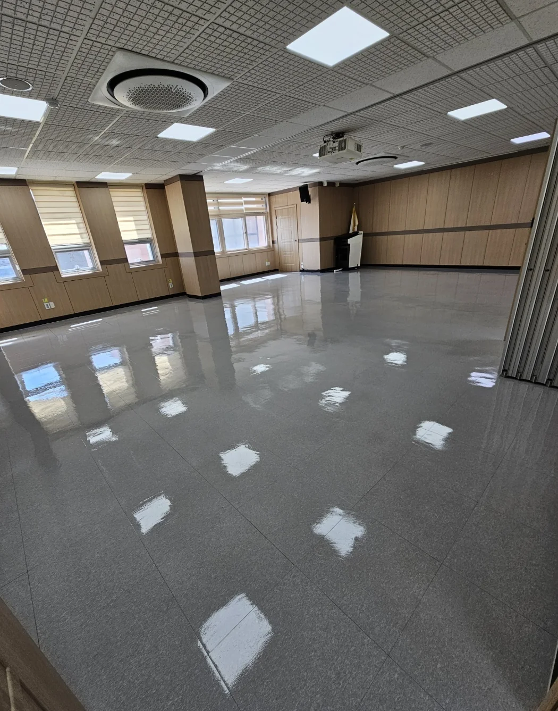

카페트청소
사무실과 복도의 카페트에 쌓인 먼지와 얼룩을 정기적으로 관리합니다.

사무실과 관공서, 학교, 화장실처럼 매일 쓰는 공간을 정기적으로 관리합니다. 바닥왁스와 카페트, 골프장카트 청소도 맡습니다.

사업장 상황을 보고 필요한 항목을 골라 관리 계획을 세웁니다.
사무실과 복도의 카페트에 쌓인 먼지와 얼룩을 정기적으로 관리합니다.
묵은 때를 벗겨 내고 왁스를 입혀 바닥의 광택을 되살립니다. 왁스층이 바닥을 보호해 다음 청소도 수월해집니다.

좌석과 바닥, 차체에 묻은 흙과 잔디를 닦아 내는 카트 청소입니다.


책상 주변과 바닥, 탕비실, 화장실까지 정해진 주기에 맞춰 관리합니다.

민원인이 드나드는 관공서 사무 공간과 복도를 정기적으로 청소합니다.


교실과 컴퓨터실, 복도와 계단 등 학생들이 쓰는 공간을 관리합니다.


화장실 전용 걸레와 도구를 따로 써서 변기, 세면대, 바닥을 위생적으로 관리합니다.

사업장에 청소 인력이 상주해야 하는 경우 근무 인력을 보내 드립니다.
건물 계단과 난간, 손잡이처럼 손이 자주 닿는 곳을 닦습니다.

사업장에서 나오는 쓰레기와 재활용품을 기준에 맞게 분리해 정리합니다.
매번 같은 곳만 닦으면 손이 덜 가는 곳이 생깁니다. 이푸른티에스는 월 4주를 기준으로 주차마다 청소 방식을 달리해, 한 달이 지나면 공간 전체가 고르게 관리되도록 합니다.
어느 주에 무엇을 할지는 사업장마다 다릅니다. 현장을 확인한 뒤 함께 정합니다.
사업장 규모와 원하시는 주기를 말씀해 주세요.